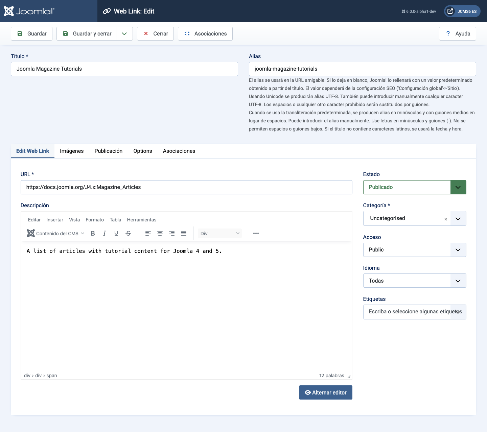
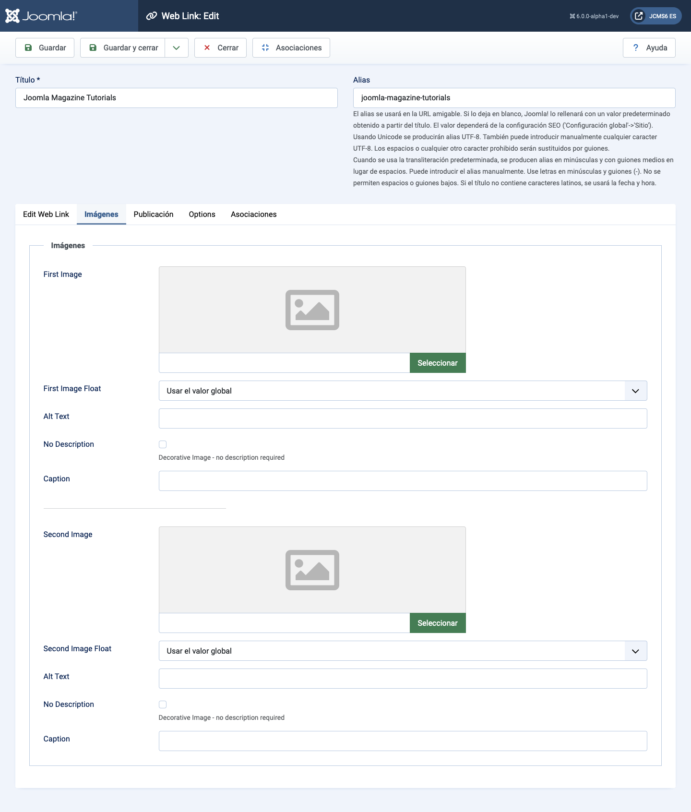
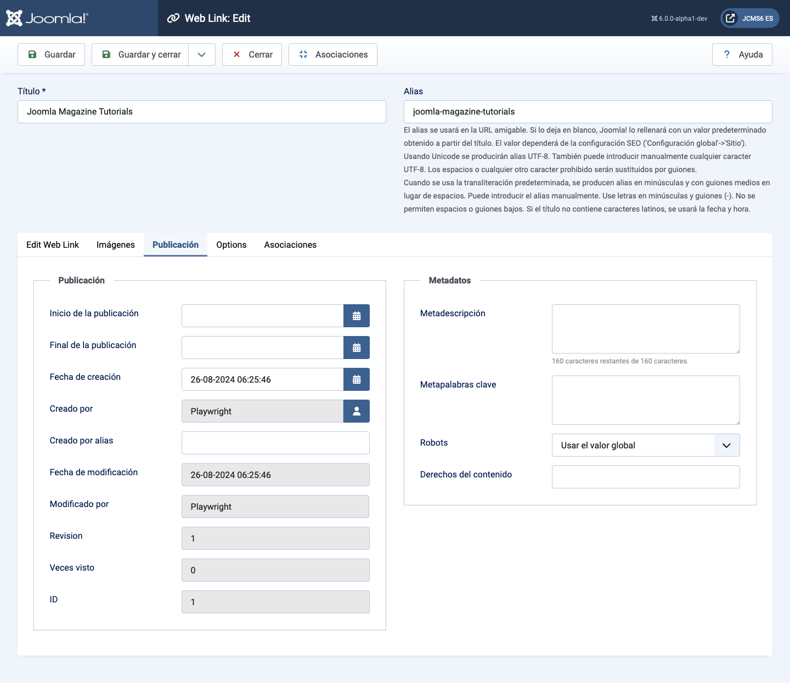
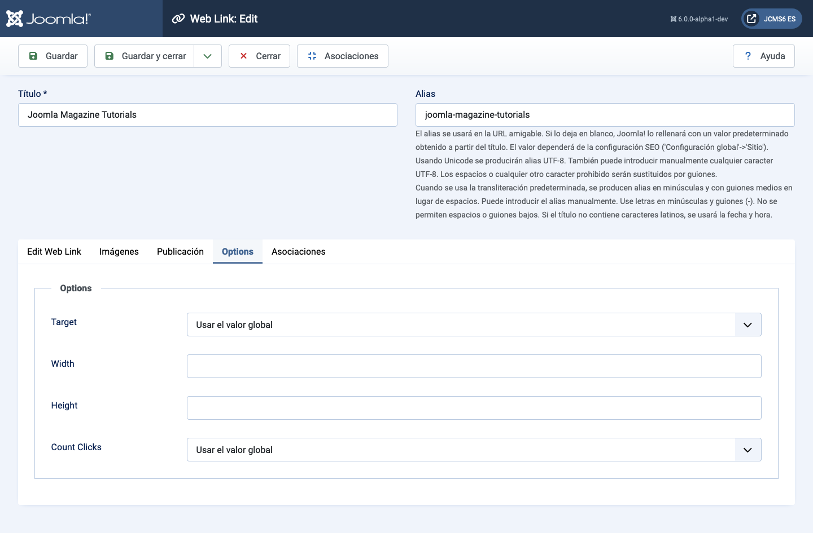

Joomla Help Screens
Lien Web : Modifier
Descripción
Este formulario se utiliza para agregar un nuevo Enlace Web o editar un enlace existente. Ten en cuenta que necesitas crear al menos una Categoría de Enlaces Web antes de poder crear tu primer Enlace Web.
Elementos Comunes
Algunos elementos de esta página se tratan en artículos de ayuda separados:
Cómo Acceder
- Seleccione Componentes → Enlaces Web → Enlaces del menú del Administrador. Luego...
- Seleccione el botón Nuevo en la Barra de herramientas para crear un nuevo enlace. O...
- Seleccione un título en la lista de enlaces para editar un enlace existente.
Captura de pantalla

Campos de Formulario
Panel Izquierdo
- URL La URL del Enlace Web.
- Descripción La descripción del elemento. Las descripciones de Categoría, Subcategoría y Enlace Web pueden mostrarse en las páginas web, dependiendo de la configuración de los parámetros. Estas descripciones se ingresan utilizando el mismo editor que se usa para Artículos.
Pestaña de Imágenes

- Primera Imagen Haga clic en Seleccionar para seleccionar una imagen que se mostrará con este elemento en el front-end.
- Alineación de Imagen Dónde colocar la imagen en relación con el texto en la página.
- Texto Alternativo Texto alternativo para los visitantes que no tienen acceso a las imágenes. Este texto se reemplaza con el texto del pie de foto si está disponible.
- Pie de Foto El pie de foto de la imagen.
- Segunda Imagen Haga clic en Seleccionar para seleccionar una imagen que se mostrará con este elemento en el front-end.
- Alineación de Imagen (Usar global/Derecha/Izquierda/Ninguna). Dónde colocar la imagen en relación con el texto en la página.
- Texto Alternativo Texto alternativo para los visitantes que no tienen acceso a las imágenes. Este texto se reemplaza con el texto del pie de foto si está disponible.
- Pie de Foto El pie de foto de la imagen.
Pestaña de Publicación

- Inicio de Publicación Fecha y hora para comenzar la publicación. Use este campo si quiere introducir contenido con antelación y que se publique automáticamente en un momento futuro.
- Fin de Publicación Fecha y hora para finalizar la publicación. Use este campo si desea que el contenido cambie automáticamente a estado No Publicado en un momento futuro (por ejemplo, cuando ya no sea aplicable).
- Fecha de Creación Este campo tiene por defecto la hora actual cuando se creó el Artículo. Puede ingresar una fecha y hora diferente o hacer clic en el icono del calendario para seleccionar la fecha deseada.
- Creado por Nombre del Usuario Joomla! que creó este elemento. Por defecto será el usuario actualmente conectado. Si quiere cambiar esto a un usuario diferente, haga clic en el botón Seleccionar Usuario para elegir un usuario diferente.
- Alias del Autor Este campo opcional permite ingresar un alias para este Autor para este Artículo. Esto le permite mostrar un nombre de Autor diferente para este Artículo.
- Fecha de Modificación (Informativo solo) Fecha de la última modificación.
- Modificado por (Informativo solo) Nombre de usuario que realizó la última modificación.
- Revisión (Informativo solo) Número de revisiones de este elemento.
- Visitas El número de veces que un elemento ha sido visto.
- ID Este es un número de identificación único para este elemento asignado automáticamente por Joomla!. Se utiliza para identificar el elemento internamente, y no puede cambiar este número. Al crear un nuevo elemento, este campo muestra 0 hasta que guarde la nueva entrada, momento en el cual se le asigna un nuevo ID.
- Descripción Meta Un párrafo opcional que se utilizará como la descripción de la página en el HTML de salida. Generalmente se mostrará en los resultados de los motores de búsqueda. Si se ingresa, esto crea un elemento meta HTML con un atributo de nombre "description" y un atributo de contenido igual al texto ingresado.
- Palabras Clave Meta Entrada opcional para palabras clave. Deben ingresarse separadas por comas (por ejemplo, "gatos, perros, mascotas") y pueden ingresarse en mayúsculas o minúsculas. (Por ejemplo, "GATOS" coincidirá con "gatos" o "Gatos").
- Referencia Externa Una referencia opcional utilizada para vincular a fuentes de datos externas. Si se ingresa, esto crea un elemento meta HTML con un atributo de nombre "xreference" y un atributo de contenido igual al texto ingresado.
- Robots Las instrucciones para los "robots" web que navegan por esta página.
- Usar Global: Usar el valor establecido en Componente→Opciones para este componente.
- Indexar, Seguir: Indexar esta página y seguir los enlaces de esta página.
- No indexar, Seguir: No indexar esta página, pero seguir los enlaces en la página. Por ejemplo, puede hacer esto para una página de mapa del sitio donde desea que se indexen los enlaces pero no desea que esta página aparezca en los motores de búsqueda.
- Indexar, No seguir: Indexar esta página, pero no seguir ningún enlace en la página. Por ejemplo, puede hacer esto para un calendario de eventos, donde desea que la página aparezca en los motores de búsqueda pero no desea indexar cada evento.
- No indexar, no seguir: No indexar esta página ni seguir ningún enlace en la página.
- Derechos de Contenido Describir qué derechos tienen los demás para usar este contenido.
Pestaña de Opciones

- Objetivo Cómo abrir el enlace. Las opciones son:
- Abrir en la ventana principal. Abrir el enlace en la ventana actual del navegador, permitiendo la navegación Hacia Atrás y Adelante.
- Abrir en nueva ventana. Abrir el enlace en una nueva ventana del navegador, permitiendo la navegación Hacia Atrás y Adelante.
- Abrir en ventana emergente. Abrir el enlace en una ventana emergente.
- Modal. Abrir el enlace en una pantalla modal.
- Ancho Ancho de la Ventana IFrame. Ingrese un número de píxeles o un porcentaje (%). Por ejemplo, "550" significa 550 píxeles. "75%" significa el 75% del ancho de la página.
- Altura Altura de la Ventana IFrame. Ingrese un número de píxeles o un porcentaje (%). Por ejemplo, "550" significa 550 píxeles. "75%" significa el 75% de la altura de la página.
- Contar Clics Si desea o no llevar un registro de cuántas veces se ha abierto este enlace web.
Traducido por openai.com